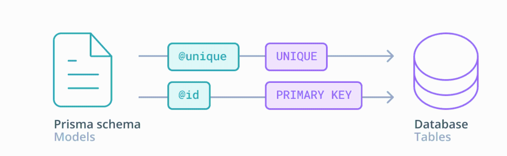
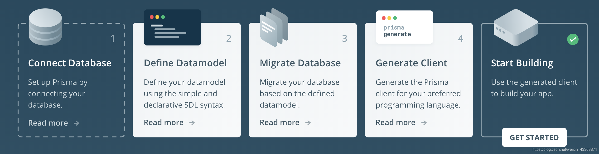
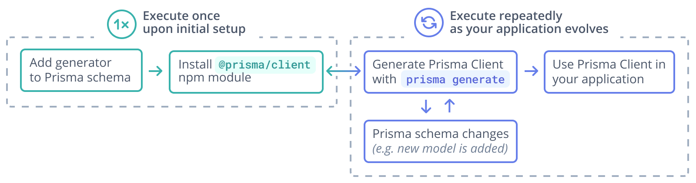
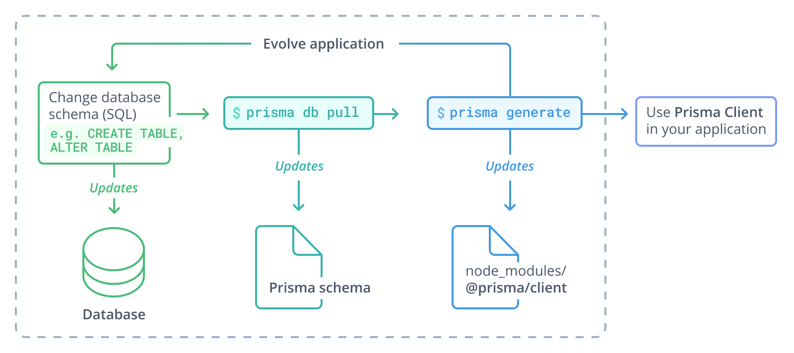
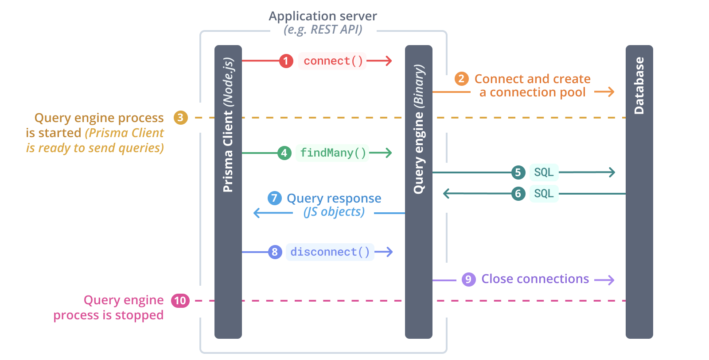
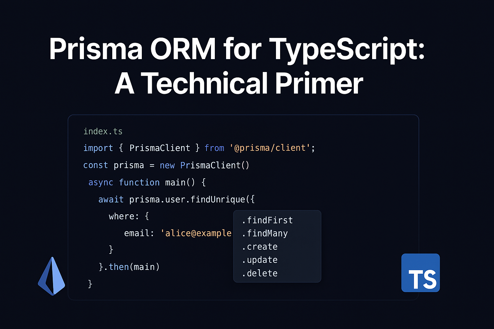
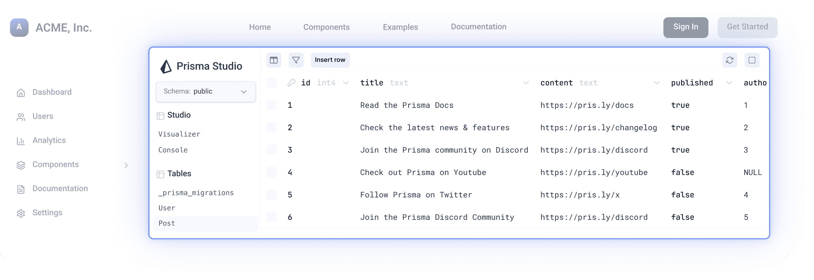

Prisma 是一个现代的 TypeScript/Node.js ORM(对象关系映射)工具，它就像应用程序和数据库之间的智能助手，帮助开发者更安全、高效地管理数据。
采用 Data Mapper 模式，将应用模型与数据库表结构解耦
提供全类型安全的数据访问层，让错误在编译阶段就能被发现
解决了传统ORM在复杂查询和类型安全性方面的常见问题
通过强类型检查在代码编写阶段就能发现潜在问题
自动生成客户端代码，减少重复性工作
使用简洁的声明式语法定义数据模型，易于理解
Prisma v5.0于2023年10月发布，带来了多项性能改进和功能增强，是目前最稳定可靠的版本。
Prisma 特别适合需要频繁修改数据模型或重视类型安全的项目，拥有活跃的开源社区和完善的文档支持。
// Prisma 数据模型定义示例
model User {
id Int @id @default(autoincrement())
name String
email String @unique
}
// 使用自动生成的客户端进行查询
const users = await prisma.user.findMany()Prisma通过模式优先的工作流实现了端到端的类型安全，解决了传统ORM在TypeScript开发中的痛点。

// 自动类型推导示例 - 错误会在编译时被发现
const user = await prisma.user.create({
data: {
name: "Alice",
email: "alice@prisma.io"
// 缺少必填字段或类型错误会直接报错
}
});| 特性 | Prisma | Sequelize |
|---|---|---|
| 类型生成 | ✅ 自动从schema生成 | ❌ 需手动定义接口 |
| 错误发现 | ⚡ 编译时检查 | ⚠️ 运行时才能发现 |
| IDE支持 | 🔍 完整字段补全 | 🖥️ 有限支持 |
基于模型自动生成CRUD方法，显著减少样板代码。
await prisma.post.findMany({
where: { author: { name: "Alice" } },
include: { comments: true }
})Post.findAll({
include: [{
model: User,
where: { name: "Alice" }
}, {
model: Comment
}]
})
// 类型安全的原生查询
const result = await prisma.$queryRawTyped`
SELECT * FROM User WHERE email = ${email}
`; (v1.34+引入)适用于实时应用场景
// 订阅用户创建事件
prisma.$subscribe.user({
mutation_in: ['CREATED'],
node: { email_contains: 'gmail' }
}).node()🆕 引入实时订阅
🛡️ 增强类型系统
🔐 TypedSQL安全查询
类型安全的查询构建器，自动生成TypeScript类型定义
声明式数据迁移工具，安全可靠的数据库变更管理
可视化数据库GUI工具，直观的数据浏览与编辑
自动生成TypeScript类型定义，提供直观的链式查询API，内置安全查询机制防止SQL注入攻击。
// 安全查询示例 - 类型安全的用户查询
const safeUser = await prisma.user.findUnique({
where: {
email: "user@example.com" // 编译器会自动验证字段有效性
}
});

设计阶段
用Migrate定义数据结构
开发阶段
通过Client执行应用查询
验证阶段
使用Studio检查数据
迭代循环
持续优化数据模型
Prisma默认强制参数化查询，有效防止SQL注入攻击
避免生产环境数据暴露风险，仅限开发环境使用
确保数据库变更历史清晰可追溯，便于问题排查
通过`--verbose`参数查看实际执行的SQL，确保符合预期

mkdir hello-prisma
cd hello-prisma
npm init -y
npm install typescript tsx @types/node --save-dev
npx tsc --initnpm install prisma --save-dev
npx prisma init --datasource-provider sqlite在prisma/schema.prisma文件中定义User模型：
model User {
id Int @id @default(autoincrement())
email String @unique
name String?
}npx prisma migrate dev --name initimport { PrismaClient } from '@prisma/client'
const prisma = new PrismaClient()
async function main() {
const user = await prisma.user.create({
data: {
name: 'Alice',
email: 'alice@prisma.io',
},
})
console.log(user)
}
main()
.catch(e => {
throw e
})
.finally(async () => {
await prisma.$disconnect()
})注意: Node.js v16.x将在Prisma 6中被移除支持，生产环境建议使用Node.js LTS版本
Prisma v5 默认使用参数化查询来防止SQL注入攻击。所有用户输入都会自动转义处理，确保数据库操作的安全性。
// 安全示例：自动参数化
const user = await prisma.user.findFirst({
where: { email: userInputEmail }
});虽然Prisma提供基础防护，但仍建议开发者进行额外验证，实现双重安全保障。
// 推荐做法：双重验证
if (!isValidEmail(userInputEmail)) {
throw new Error('Invalid email format');
}PostgreSQL驱动要求：
// 安全实践：选择性查询
const user = await prisma.user.findUnique({
where: { id: 1 },
select: {
name: true,
email: true
// 明确排除密码等敏感字段
}
});nativeDistinct安全实现集成迁移工具(Schema Migrate)和可视化界面(Prisma Studio)，提供完整的数据库管理体验
前端(React/Vue/Angular) + 后端(Node.js)统一类型系统，提供无缝的开发体验
示例：Next.js全栈应用的数据层实现
Schema文件作为单一数据源，确保团队成员编写一致的数据库查询
避免SQL查询不一致导致的维护问题

